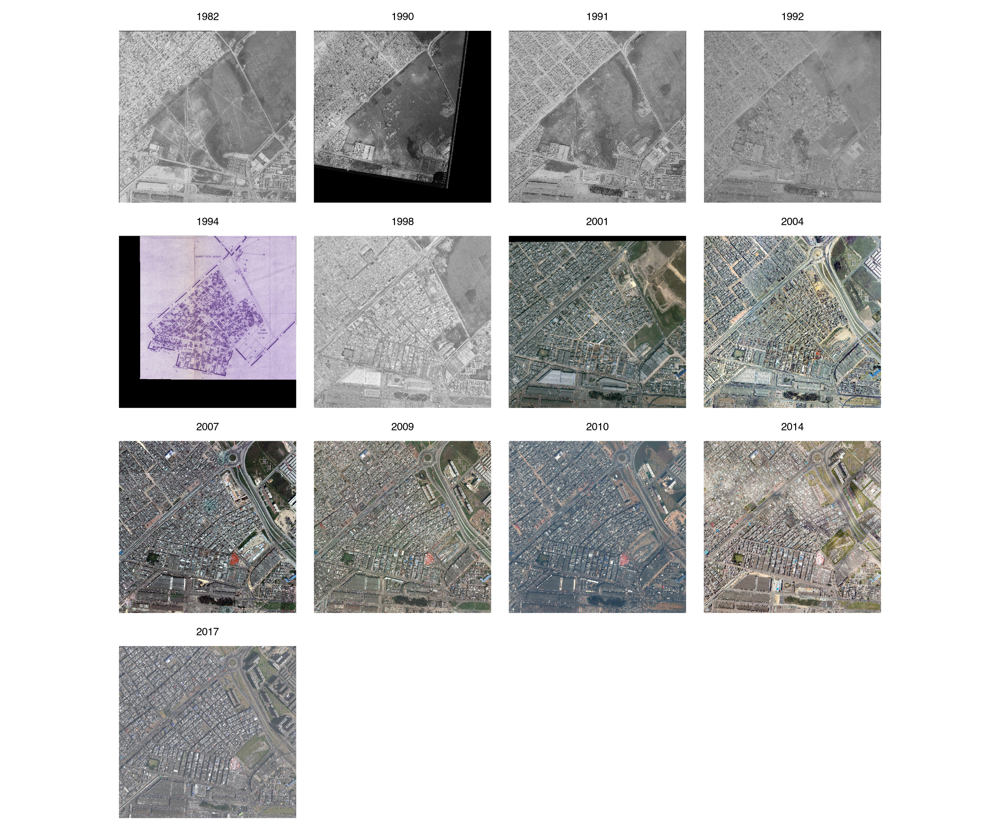
Transformaciones morfológicas del barrio María Paz (1989-2026)
Avance metodológico y de análisis por períodos
Introducción
Este avance busca caracterizar las transformaciones morfológicas del sector actualmente conocido como barrio María Paz, empezando desde sus inicios como terreno sin urbanizar propiedad de Corabastos S.A. en 1989 hasta la actualidad como barrio legal y consolidado (2026).
Durante el proceso se hace necesario cruzar fuentes de distinta naturaleza. Se usa aerofotografía del sector para los años 1982, 1990, 1991, 1992 (IGAC, n.d.) y 1998 (UAECD, n.d.), las planchas 46 y 47 de la carta rural predial de 1994 elaboradas para el catastro distrital (IDU, n.d.), el Mapa de Referencia para Bogotá D.C. (IDECA, n.d.), la capa de titulación predial proporcionada por la Caja de Vivienda Popular (CVP 2026) y los microdatos de los censos nacionales de 1993, 2005, y 2018 (DANE, n.d.).
Para interpretar los hallazgos, se contrasta con la normativa de legalización y titulación, estudios previamente realizados en el barrio tanto académicos (Parra Caro 2020) como oficiales (Instituto de Desarrollo Urbano 2018), así como artículos de prensa relevantes (Parra 2026), (Concejo de Bogotá 2017) que sirven de contexto para caracterizar el proceso.
El análisis se organiza en cinco períodos identificados durante el proceso analítico, propuestos de manera inicial y sujetos a modificaciones conforme se avance en el proceso analítico de las fuentes.
Proceso metodológico
Para realizar este informe fueron procesadas las aerofotografías y planchas del sector disponibles implementando el software QGIS LTR 3.4 Solothurn, se usa como base la proyección estándar MAGNA-SIRGAS 2018 / Origen Nacional y el algoritmo de corrección polinomial 2 para la georreferenciación de las imágenes.
Para el filtrado, procesamiento y análisis de datos cuantitativos se usó el lenguaje de programación estadística R v4.5+ y como IDE se implementó RStudio. Durante el proceso fue necesario hacer una revisión comparada del MR en sus 16 versiones, lo que dejó importantes hallazgos en cuanto a sus características y evolución, evidenciando cambios importantes en su estructura a través del tiempo. Asimismo, se usaron los microdatos censales de los censos de 1993, 2005 y 2018 para obtener datos sobre cobertura de servicios públicos en el sector para los tres cortes.
A continuación, se hace una breve descripción de cada conjunto de datos y los componentes seleccionados para el análisis.
Mapa de Referencia de la ciudad de Bogotá
Es una base de datos suministrada por la Infraestructura de Datos Espaciales Para el distrito Capital (IDECA)1, siendo de vital importancia como instrumento técnico para las entidades distritales, privadas y/o personas naturales. En su versión actual se compone 40 niveles de información, entre ellos 37 objetos estandarizados de tipo vector y 3 rasters (i.e. capas de aerofotografía en línea) (IDECA, n.d.). Desde el 2022 la base de datos es liberada con una periodicidad trimestral y se encuentra disponible para su libre descarga conforme a la política nacional de datos abiertos.
Para este informe, la fuente principal elegida fue la versión 2026.03 del MR, aunque bien, se usan versiones previas2 para obtener datos orientados a estimar el crecimiento vertical del sector durante el periodo 2011-2026. La estructura de dicho dataset es de tipo relacional, del cual son seleccionados los siguientes objetos como fuente de datos en función de su contenido.
| Objeto | Tipo | Descripción | Incluido en versiones | Implementación |
|---|---|---|---|---|
| Área urbanística | Capa vectorial | Polígonos de las áreas urbanas registradas en la ciudad de Bogotá, entre estas los barrios legalizados por la SDP. | Todas | Delimitación espacial del barrio, conforme a la resolución 369 de 1998 DAPD y plano K42/4-00. |
| Manzana (catastral) | Capa vectorial | Polígonos de las manzanas catastrales registradas de la ciudad. | Todas | Representar gráficamente el espacio. Relacionar indicadores para su representación gráfica. |
| Lote | Capa vectorial | Polígonos de lotes registrados en la cuidad de Bogotá. | Todas | Representar gráficamente el espacio. Obtener datos de propiedad y morfología (dimensión horizontal). Relacionar indicadores para su representación gráfica. |
| Construcción | Capa vectorial | Polígonos de construcciones en los lotes registrados en la cuidad de Bogotá. | Todas | Obtener datos de la morfología del espacio (dimensión vertical). |
| Predio | Tabla | Información predial de la ciudad de Bogotá a la fecha del corte del MR. | 2019 en adelante | Obtener datos sobre el tipo de propiedad. Realizar datación estimada del proceso de desarrollo morfológico del barrio. |
| Uso | Tabla | Tipo de uso asignado a las construcciones existentes en los predios de la ciudad. | 2012 en adelante | Caracterizar los usos del suelo por categorías a nivel de lote y manzana. |
| Estrato socioeconómico | Tabla | Estrato socioeconómico asignado a cada lote de la ciudad de Bogotá. | 2012 en adelante | Comparar la clasificación socioeconómica oficial del barrio con otras fuentes. |
Cada uno de estos objetos contiene datos fundamentales que permiten representar la espacio-temporalidad de cualquier sector de la ciudad. Para ello, de cada objeto son seleccionados los siguientes atributos, tratados aquí como variables estadísticas, para caracterizar el desarrollo morfológico del espacio.
| Objeto | Variable | Etiqueta | Definición oficial | Relevancia |
|---|---|---|---|---|
| Predio | PreTProp |
Tipo de Predio | Tipo de Predio según clasificación de la UAECD en función del propietario. | Relacionar la propiedad con la tipología asignada al predio. |
| Predio | PreClase |
Clase Predio | Corresponde a si se trata de un predio que corresponde al régimen de Propiedad Horizontal o es un predio No Propiedad Horizontal. | Detectar el tipo de propiedad asociado a las unidades prediales. |
| Predio | PreCDestin |
Destino Económico | Corresponde al código que describe la actividad económica potencial de explotación de un predio. | Detectar la relación entre la propiedad del terreno y construcciones dentro de este. |
| Predio | PreVetustz |
Vetustez | Año de la construcción. | Representar de manera estimada la temporalidad de la expansión horizontal del barrio. |
| Uso | UsoTUso |
Tipo de Uso | Tipo de uso presente en el Lote. | Identificar los usos asociados al lote y/o predios relacionados. |
| Uso | UsoArea |
Área del uso | Área correspondiente al Uso. | Medir el área construida dentro de un lote. Relacionar el área asignada construida por uso en un lote. |
| Estrato socioeconómico | ESoEstrato |
Estrato | Sistema de clasificación de inmuebles residenciales, el cual tiene en cuenta el nivel de ingreso de los propietarios, la dotación de servicios públicos, ubicación y otros. | Caracterizar la clasificación oficial del espacio con respecto al perfil socioeconómico asignado. |
| Construcción | ConNPisos |
Número de pisos | Número de pisos que tiene la construcción. | Representar el crecimiento vertical del barrio en 2011-2026. |
Para la extracción de los datos se usa como referencia el polígono del barrio, identificado en función del acto administrativo de legalización (Resolución 369 del 20 de agosto de 1998 del DAPD) registrado en la base de datos y asociado al área urbanística correspondiente. Una vez identificada el área geográfica se filtran los datos de cada objeto para obtener la muestra topológica correspondiente (i.e. manzanas catastrales, lotes y construcciones), así como los datos tabulares asociados a dichas unidades espaciales.
En este punto se hace necesario definir cada tipo de unidad y sus correlaciones. Para ello, se exponen las definiciones oficiales de la UAECD.
Área urbanística: “Heredad, hacienda, tierra o posesión inmueble, que sufrió proceso de urbanización aprobado por la Secretaría Distrital de Planeación o por una Curaduría Urbana, representado gráficamente en un plano urbanístico, legalizado, de curaduría urbana, de reloteo, proyecto general o modificación de proyecto general.”
Barrio: “Se denomina a la unidad geográfica urbana conformada por un número determinado de predios pertenecientes a una o varias manzanas.”
Manzana: “Es una representación gráfica de una porción de terreno en la ciudad de Bogotá, conformada por uno o más predios y delimitado generalmente por vías o accidentes geográficos (diferentes formas que tiene el terreno). Las manzanas catastrales son requisito para curadurías urbanas, servicios públicos, alcaldías menores, procesos judiciales, establecimiento de rutas, información general del sector y fines académicos.”
Lote: “Mínima unidad geográfica donde se ubica uno o más predios ya sean urbanos o rurales. Su extensión geográfica es el Distrito Capital.”
Construcción (o edificación): “Es la unión de materiales adheridos al terreno, con carácter de permanente, cualesquiera sean los elementos que la constituyan.”
Predio: “Es un inmueble no separado por otro predio público o privado, con o sin construcciones y/o edificaciones, perteneciente a personas naturales o jurídicas. El predio mantiene su unidad aunque esté atravesado por corrientes de agua pública. * Se incluyen en esta definición los baldíos, los ejidos, los vacantes, los resguardos indígenas, las reservas naturales, las tierras de las comunidades negras, la propiedad horizontal, los condominios (unidades inmobiliarias cerradas), las multipropiedades, las parcelaciones, los parques cementerios, los bienes de uso público y todos aquellos otros que se encuentren individualizados con una matrícula inmobiliaria, así como las mejoras por edificaciones en terreno ajeno.”
Aclaraciones conceptuales fundamentales
Es importante remarcar que el predio es un concepto fiscal con fines tributarios. Define tanto al lote como a las construcciones que puedan haber dentro de este de manera diferenciada, en función de la propiedad de cada inmueble y los tipos de uso asignados; en el caso de las construcciones, estas pueden tener uno o varios tipos de uso registrados y/o propietarios diferentes al terreno que ocupan.
En el caso del barrio María Paz, considerando su origen como barrio ilegal, un conjunto predial (lote y sus posibles construcciones) en concreto puede implicar dos tipos de propiedad o varios tipos de uso, en tanto una o mas construcciones dentro de un lote, y el lote mismo, pueden reportar distintos propietarios en función del tipo de la tenencia del inmueble. Las propiedades que no han sido debidamente legalizadas pueden reportar una propiedad distinta respecto al terreno (lote) frente a las construcciones contenidas en este; que dado el caso son registradas como mejoras ajenas dentro del terreno, tomado por posesión.
Esto tiene implicaciones importantes para realizar una caracterización adecuada del barrio a partir de esta fuente, y permite detectar patrones de ocupación del espacio que remiten al origen informal del mismo.
Por otro lado, pero conexo a lo anterior, para obtener una cronología estimada del desarrollo del barrio se utiliza la variable vetustez: específicamente se toma el valor mínimo registrado en cada predio correspondiente por cada lote para representar geográficamente el primer registro disponible de actividad constructiva en dicha unidad espacial. Con respecto a esta variable cabe resaltar que es válida sólo para obtener un estimado de la primera ocupación del lote en tanto las construcciones dentro de esta no hayan sido completamente demolidas3.
Por ello, es imprescindible contrastar los datos catastrales con aerofotografía y planos de la época formativa del barrio para obtener información más cercana a la realidad del periodo formativo del barrio.
Aerofotografía y planos antiguos del sector
El Instituto Geográfico Agustín Codazzi dispone para el público en general de una extensa colección de aerofotografía histórica a nivel nacional. De allí se obtienen cuatro piezas gráficas, correspondiente a los años 1982, 1990, 1991 y 1992, que sirven de base para contrastar los datos de vetustez predial.
Asimismo, el Instituto de Desarrollo Urbano provee acceso abierto a una extensa biblioteca en línea en donde son hallados diversos materiales, entre estos la plancha del barrio correspondiente a la carta predial rural de 1994. Otro documento relevante es el plano K42/4-00 de 1997, material clave en el proceso de legalización del barrio y el cual contiene información muy relevante, como la composición de algunos miembros de la JAC de entonces.
Por otro lado, la UAECD provee de aerofotografía para el año 1998 de la zona urbana de Bogotá, además de otras capas de imágenes para periodos posteriores. Las imágenes satelitales, por su parte, complementan el análisis espacial para los periodos posteriores: se cuenta con un amplio repertorio de imágenes de alta calidad desde el año 2001 de fuentes como Google Earth, ESRI, entre otras.
Microdatos censales
El Departamento Administrativo Nacional de Estadística (DANE) provee los microdatos de los censos nacionales de 1993, 2005 y 2018, organizados de manera relacional en tablas vinculadas entre sí mediante llaves de registro, de las cuales son seleccionadas en todos los casos, Vivienda, Hogar y Personas. Este conjunto de datos permite hacer una reconstrucción detallada de las condiciones sociodemográficas en áreas específicas del territorio nacional, en tanto su estructura relacional parte de su articulación con el Marco Geoestadístico Nacional, la unidad geográfica urbana principal es la manzana censal.
Por su parte, el Marco Geoestadístico Nacional (MGN) es un instrumento elaborado y mantenido por el DANE, en coordinación con la cartografía oficial del IGAC, que reúne un conjunto de capas geográficas de tipo urbano y rural, el cual provee la cartografía necesaria para realizar cualquier operación estadística a nivel nacional de conformidad con los estándares colombianos. Es elaborado por el DANE y su primera versión operativa data de 1993, y su correspondencia con los geodatos catastrales es parcial en función de los niveles de agregación necesarios para proteger el secreto estadítisco. La correlación con el MR se aborda en el apartado de integración.
Ahora bien, considerando la naturaleza de este informe, por el momento la fuente censal no se emplea para construir un perfil sociodemográfico del barrio. Los datos son seleccionados y procesados únicamente para documentar el estado material de la vivienda y su conexión a las redes de servicios en los tres cortes disponibles; las variables de hogar y persona se incorporan únicamente para documentar la ocupación del espacio construido: número de hogares por vivienda, tamaño del hogar y densidad de ocupación de cuartos y dormitorios.
A continuación se describe cada operativo y el conjunto de variables efectivamente utilizado.
XVI Censo Nacional de Población y V de Vivienda - 1993
Esta operación estadística fue realizada el 24 de octubre de 1993 después de varios años de planeación y coordinación intra e inter-institucional bajo el criterio de Jure4 (DANE 2009). Destaca por ser el primer censo colombiano en implementar cartografía digital y georreferenciación basada en el MGN y la publicación de resultados definitivos se llevó a cabo en julio de 1996 después de un fuerte proceso de corrección y resolución de problemas derivados de problemas logísticos producto de la metodología de recolección, el tipo de personal empleado para ello, y esencialmente, por una gestión institucional conflictiva que afectaron de manera importante el proceso de modernización de la entidad.
Los problemas de calidad relativos a este conjunto de datos, especialmente en lo relativo al subregistro y diseño metodológico para capturar datos específicos (e.g. la escolaridad en relación a la educación técnica) están extensamente documentados, así como el proceso de mitigación y corrección de errores a que hubo lugar (DNP 1996). Los microdatos censales anonimizados fueron liberados al público en el primer semestre de 2025.
A pesar de lo anterior, es Importante remarcar que este censo coincide con el primer periodo de construcción y ocupación del barrio, asimismo, que la información registrada sobre barrio María Paz aporta datos importantes sobre su perfil sociodemogŕafico y la configuración del tejido urbano.
Un ejemplo de ello es la información disponible en materia de servicios públicos y de disposición de residuos, donde registra por separado formas precarias de eliminación de la basura y de saneamiento, además contiene datos sobre la cobertura de acueducto, alcantarillado, energía y redes telefónicas por vivienda.
A continuación se presentan las variables seleccionadas para este informe.
| Tabla | Variable | Etiqueta | Relevancia |
|---|---|---|---|
| Vivienda | V12_CONOCUP |
Condición de ocupación | Distingue vivienda ocupada de ausente, temporal o desocupada. |
| Vivienda | V1_ELEC |
Energía eléctrica | Cobertura de red eléctrica. |
| Vivienda | V1_ACUE |
Acueducto | Cobertura de red de agua. |
| Vivienda | V1_ALCA |
Alcantarillado | Cobertura de red de alcantarillado. |
| Vivienda | V1_TELE |
Teléfono | Conectividad telefónica fija. |
| Vivienda | V12_ELIBAS |
Forma de eliminación de la basura | Registro desagregado de las formas de disposición, incluidas las precarias. |
| Vivienda | V12_TIPOVIV |
Tipo de vivienda | Tipología constructiva declarada. |
| Hogar | HV12W_SANITAR_ES |
Tipo de servicio sanitario | Condiciones de saneamiento al interior de la vivienda. |
| Hogar | H12_TOTPER |
Total de personas del hogar | Tamaño del hogar y base de la densidad de ocupación. |
| Hogar | H1_NROCUAR |
Número de cuartos | Base para el cálculo de personas por cuarto. |
Censo General 2005 - Básico
La operación se llevó a cabo por fases desde el 22 de mayo de 2005 hasta marzo 6 de 2006 bajo el criterio de Jure. Destacó por una mayor integración de NNTT en el proceso de empadronamiento y recolección de datos destacando la implementación parcial de Dispositivos Móviles de Captura (DMC) y sistemas de georreferenciación basados en GPS para el registro de encuestas y georreferenciación a nivel nacional (DANE 2008). Asimismo, se realizaron dos tipos de encuesta que derivaron en dos conjuntos de datos diferenciados; el conjunto básico, que contiene todos los registros VIHOPE a nivel nacional y el conjunto ampliado, producto de la encuesta cocensual detallada la cual fue realizada a un grupo limitado de la población seleccionada por muestreo.
Al igual que en censo de 1993 la operación presentó dificultades, aunque relacionadas no sólo por la dinámica institucional sino además con respecto a la logística y cobertura del universo muestral (Ryten et al. 2007); problemas relacionados con la plataforma tecnológica, acceso zonas afectadas por la crisis humanitaria nacional, entre otras, derivaron en tasas importantes de omisión censal que debieron ser mitigadas para consolidar la información obtenida.
Empero, no sobra decir que este operativo captura al barrio ya legalizado urbanísticamente y en una fase de densificación y mejora progresiva del tejido urbano, por tanto esta fuente aporta información clave sobre el barrio María Paz que debe ser incluida para su análisis cruzado.
Para este informe sólo se considera usar el marco básico en función de obtener una instantánea de la población del barrio María Paz a principios del siglo XXI. Al restringir la extracción a dicho componente, el corte 2005 queda limitado a servicios, tipología de vivienda, condición de ocupación y tamaño del hogar, ya que el censo básico no suministra microdatos sobre sanitarios, materiales de construcción ni número de cuartos o dormitorios. Esta limitación frente a 1993 y 2018 es una característica del conjunto seleccionado y debe tenerse presente para trabajar las series espaciotemporales.
Las variables especificas seleccionadas para este informe se presentan en la siguiente tabla.
| Tabla | Variable | Etiqueta | Relevancia |
|---|---|---|---|
| Vivienda | VC00B_CON_OCUP |
Condición de ocupación | Distingue vivienda ocupada de ausente, temporal o desocupada. |
| Vivienda | V01B_TIP_VIV |
Tipo de vivienda | Tipología constructiva declarada. |
| Vivienda | V05B1_ELECTRICA |
Energía eléctrica | Cobertura de red eléctrica. |
| Vivienda | V05B2_ALCANTARI |
Alcantarillado | Cobertura de red de alcantarillado. |
| Vivienda | V05B3_ACUEDUCTO |
Acueducto | Cobertura de red de agua. |
| Vivienda | V05B4_GAS_NAT |
Gas natural | Primera aparición del servicio en la serie seleccionada. |
| Vivienda | V05B5_TELEFONO |
Teléfono | Conectividad telefónica fija. |
| Vivienda | VC01B_TOT_HOG |
Total de hogares en la vivienda | Subdivisión interna de la vivienda. |
| Hogar | HC06B_TOT_PER |
Total de personas del hogar | Tamaño del hogar. |
Censo Nacional de Población y Vivienda 2018
El último censo nacional realizado en Colombia fue realizado en dos etapas, empezando el 12 de abril de 2018 con la fase virtual (eCenso) que consistió en permitir a la ciudadanía rellenar el formulario de manera autónoma vía Internet (12% de la población aprox.) y finalmente la fase presencial, que se llevó a cabo entre el 18 de abril y el 30 de octubre de 2018. Destacó por marcar un punto clave en la transición tecnológica de la institución que devino en el uso exclusivo de DMC para las zonas urbanas, implementando además georreferenciación en tiempo real (DANE 2018).
Por diseño, la calidad del dato mejora sustancialmente en comparación a los censo anteriores. Un ejemplo de ello es que se amplía la información de redes de servicios públicos, saneamiento y se integra el acceso a Internet en el cuestionario. Otro detalle fundamental es la aplicación de estándares internacionales con relación a la medición de la calidad de la vivienda incorpora el número de dormitorios por hogar, lo que permite medir el hacinamiento de acuerdo a las recomendaciones expertas(Arriadaga 2011).
Los problemas y limitaciones relacionados con esta operación se relacionan un una alta omisión censal resultado de errores logísticos y problemas de acceso a zonas vulnerables del territorio nacional (DANE 2019). Esto dejó subrrepresentadas en gran medida a comunidades étnicas y marginadas del país, lo que llevó a un proceso de mitigación y conciliación censal que implicó un fuerte trabajo interinstitucional (DANE 2022), que se vió reflejado en los informes de resultados presentados por la entidad en julio de 2019.
Para este caso, el censo de 2018 permite una lectura cruzada del barrio ya plenamente consolidado y en pleno proceso de titulación masiva predial, siendo una herramienta fundamental para caracterizar el tejido urbano del barrio María Paz a finales de la década de 2020.
Se presentan las variables seleccionadas para el análisis en la siguiente tabla.
| Tabla | Variable | Etiqueta | Relevancia |
|---|---|---|---|
| Vivienda | V_CON_OCUP |
Condición de ocupación | Distingue vivienda ocupada de ausente, temporal o desocupada. |
| Vivienda | V_TIPO_VIV |
Tipo de vivienda | Tipología constructiva declarada. |
| Vivienda | VA_EE |
Energía eléctrica | Cobertura de red eléctrica. |
| Vivienda | VB_ACU |
Acueducto | Cobertura de red de agua. |
| Vivienda | VC_ALC |
Alcantarillado | Cobertura de red de alcantarillado. |
| Vivienda | VD_GAS |
Gas natural conectado a red pública | Cobertura de gas por red. |
| Vivienda | VE_RECBAS |
Recolección de basura | Formalización de la disposición de residuos. |
| Vivienda | VF_INTERNET |
Internet (fijo o móvil) | Conectividad digital. |
| Vivienda | V_TIPO_SERSA |
Tipo de servicio sanitario (inodoro) | Condiciones de saneamiento y tipo de conexión. |
| Vivienda | V_TOT_HOG |
Total de hogares en la vivienda | Subdivisión interna de la vivienda. |
| Hogar | HA_TOT_PER |
Total de personas del hogar | Tamaño del hogar. |
| Hogar | H_NRO_CUARTOS |
Número de cuartos | Base para el cálculo de personas por cuarto. |
| Hogar | H_NRO_DORMIT |
Número de dormitorios | Base para el cálculo de personas por dormitorio. |
Alcances de las fuentes censales
La lectura conjunta de los tres cuestionarios revela diferencias significativas en la estructura de las variables, los criterios de captura y las unidades geográficas de referencia. Estas diferencias no son menores y afectan directamente la comparación intercensal de los indicadores, lo cual exige decisiones críticas para armonizar los datos antes de cualquier análisis.
Sobre las variables relativas a la tipología de hogares y vivienda, es posible afirmar que son comparables en los tres censos. La condición de ocupación, hogares por vivienda y tamaño del hogar responden a los mismos criterios, sin embargo, la distinción entre cuartos y dormitorios sólo se hace presente en 2018, lo cual limita la posibilidad de realizar cálculos de hacinamiento para los dos censos previos.
Otro aspecto a considerar son los posibles cambios estructurales a nivel nacional que parecen quedar registrados en los tres cortes; los datos sobre cobertura de redes de telecomunicaciones, gas natural residencial y disposición de residuos parecen dar cuenta de ello.
Sobre redes de telecomunicaciones en 1993 y 2005 la única variable disponible se asocia a líneas telefónicas fijas, pero en 2018 esto cambia drasticamente al registrarse exclusivamente el acceso a internet fijo o móvil en las viviendas encuestadas, respecto del acceso a gas natural residencial, la variable sólo aparece desde 2005, y sobre la disposición de basuras, 1993 y 2018 muestran cambios en la manera de registrar el manejo de los residuos domésticos, especialmente en lo relacionado a la quema y enterramiento de basuras.
Los detalles del proceso de armonización se discutirán en el apartado de integración de fuentes cuantitativas y geoespaciales.
Titulación predial - Caja de Vivienda Popular
La Caja de Vivienda popular - CVP provee una capa geoespacial GIS de titulación por lotes de la ciudad de Bogotá, la cual da cuenta del proceso de titulación masiva en el barrio María Paz en el año 2018. Esta fuente de información se encuentra disponible para su libre descarga en la plataforma de datos abiertos de Bogotá (Datos Abiertos Bogotá, n.d.) y se emplea en este informe para caracterizar el proceso de formalización durante el último periodo identificado. Este objeto geográfico cumple con los estándares del mapa de referencia, por lo cual el cruce efectivo con la capa oficial de lotes está garantizada. Los campos relevantes de la capa vectorial se describen a continuación.
| Variable | Descripción |
|---|---|
Mecanismo_de_titulación |
Referencia al tipo de instrumento utilizado en el proceso de titulación |
Título_Entregado |
Tipo de titulación asociada a la legalización del predio-lote |
Número_del_Título |
Consecutivo del título entregado |
Fecha_del_Título |
Fecha de expedición del titulo entregado |
Una vez presentados los conjuntos de datos seleccionados y sus caracteristicas más pertinentes, es necesario detallar el proceso de integración y armonización de las fuentes para un correcto cruce de datos orientado hacia la producción de la información requerida para la fase analítica.
Integración de las fuentes cuantitativas y geoespaciales
En este punto se busca delimitar las dimensiones del proceso constructivo a partir de los datos obtenidos. A partir de los datos cuantitativos del barrio se obtiene un perfil morfológico que permite medir y representar su dimensión espacial, limitado por los alcances y pertinencia de cada fuente, para realizar una periodización relativa al proceso constructivo del barrio María Paz.
Para esta entrega el MR 2026.03 es la base fundamental en tanto la información morfológica principal se obtiene de esta fuente. En ese sentido es la columna vertebral para la producir el informe. Todas las fuentes cuantitativas y geoespaciales empleadas para el informe guardan relación directa con sus capas geoespaciales, haciendo totalmente viable e indispensable su rol principal.
De manera conexa, la aerofotografía del periodo 1982 a 1998, así como el plano de 1994, valida el MR como estimador del crecimiento horizontal. La comparación de las imágenes obtenidas permite afirmar que la vetustez registrada por catastro estima razonablemente el período formativo, aunque con un rezago administrativo de 1 a 2 años. En ese sentido, se detecta una correlación directa entre ambas fuentes que permite observar que el crecimiento horizontal del barrio María Paz hasta circa 2000.
Con respecto a la dimensión vertical, esta no se puede reconstruir sólamente con el MR versión 2026.03, ya que cada corte no guarda un histórico de la variable de altura en pisos de las edificaciones. Por ello, esta dimensión se resuelve parcialmente con versiones anteriores del MR que permiten medir número de pisos desde el año 2011.
En ese sentido, es importante mencionar que, considerando los límites disciplinares propios para obtener dicho dato usando areofotografía entre 1989 y 2011 hay un vacío importante: debido a los alcances actuales en esta etapa de la investigación no se dispone de las herramientas técnicas ni conceptuales para medir la verticalidad del barrio usando las imágenes disponibles para dicho periodo.
Por otro lado, para cuantificar el acceso a los servicios públicos se usan los datos de cobertura disponibles en los tres cortes censales. Para este breve análisis sólo se tendrán en cuenta dichos datos disponibles en los censos de 1993, 2005 y 2018 en función de caracterizar aspectos morfológicos del barrio5, en tanto elemento relevante para estimar el acceso de la población del barrio María Paz a los servicios básicos6.
Para ello se requiere de un proceso de armonización en dos niveles. Por una parte se conectan las capas geoestadísticas de manzanas censales MGN con su correspondencia catastral para extrapolar los datos censales al MR, por otro lado se armonizan los datos intercensales para establecer su equivalencia, hacer comparables los datos y derivar en las variables homologadas requeridas para los cálculos generales.
Sobre el primer proceso, son necesarios ajustes en la asignación de manzanas censales para distribuir los datos de manera adecuada a los propósitos de este estudio. Esto implica una selección rigurosa que se basa en el cruce de fuentes catastrales e imagen aérea para determinar los criterios de selección que materialzan la asignación de correspondencias. En este sentido surgen dos reglas de respaldo: asignación por proporción de área en casos de intersección y por evidencia documental para determinar la ocupación a partir de fuentes históricas.
Resuelto el problema se procede con la armonización intercensal. Para ello se realizó un análisis comparado de la documentación, además de una revisión empírica de los datasets para verificar la calidad del dato y su pertinencia, lo cual estableció la base fundamental para hacer conmensurables los datos y producir la información requerida.
Una vez concluido en análisis comparado, se establecen tres universos muestrales para la estructuración de los cálculos respectivos; el primero corresponde con todas las viviendas, encuestadas o no, incluidas en el marco censal; el segundo con las viviendas efectivamente encuestadas; el tercero se compone de los hogares y personas derivados del segundo universo. Como resultado del proceso se obtiene la matriz de armonización de variables para realizar los cálculos respectivos.
A continuación se presentan las tablas resultado del proceso.
| Concepto | Censo 1993 | Censo 2005 | Censo 2018 | Nota metodológica |
|---|---|---|---|---|
| Ocupada con personas presentes | 1 |
1 |
1 |
Universo base para cálculo de servicios y tipología. |
| Ocupada con personas ausentes | 2 |
2 |
2 |
Excluida del denominador de servicios. |
| Temporal / uso ocasional | 3 |
4 |
3 |
Excluida. Nota: en 2005 el código es 4. |
| Desocupada | 4 |
3 |
4 |
Excluida. Nota: en 2005 el código es 3. |
| Concepto | Censo 1993 | Censo 2005 | Censo 2018 | Nota metodológica |
|---|---|---|---|---|
| Tipo de vivienda | V12_TIPOVIV1,2: Casa3: Apto4: Cuarto5,6,7: Otro |
V01B_TIP_VIV1: Casa3: Apto4: Cuarto5: Otro |
V_TIPO_VIV1: Casa2: Apto3: Cuarto5,6: Otro |
Se agruparon en 4 categorías comparables. La categoría “2: tradicional indígena” (1993) se incluye en “Casa” tras validación de perfil urbano y étnico. |
| Hogares por vivienda | Conteo por llavev en tabla de hogares |
VC01B_TOT_HOG(“ 01”, “02”, “03”, “04” o más) |
V_TOT_HOG(“ 1”, “2”, “3”, “4” o más) |
En 1993 se deriva contando registros de hogar vinculados a la vivienda. |
| Tamaño del hogar | H12_TOTPER |
HC06B_TOT_PER |
HA_TOT_PER |
Serie completa. Se calcula promedio y distribución (unipersonal, 6+ personas). |
| Servicio | Censo 1993 | Censo 2005 | Censo 2018 | Nota metodológica |
|---|---|---|---|---|
| Energía eléctrica | V1_ELEC |
V05B1_ELECTRICA |
VA_EE |
1: Sí, 2: No, 9: No informa. |
| Acueducto | V1_ACUE |
V05B3_ACUEDUCTO |
VB_ACU |
1: Sí, 2: No, 9: No informa. |
| Alcantarillado | V1_ALCA |
V05B2_ALCANTARI |
VC_ALC |
1: Sí, 2: No, 9: No informa. |
| Teléfono fijo | V1_TELE |
V05B5_TELEFONO |
No disponible | 1: Sí, 2: No, 9: No informa. |
| Gas natural | No disponible | V05B4_GAS_NAT |
VD_GAS |
1: Sí, 2: No, 9: No informa. |
| Internet | No disponible | No disponible | VF_INTERNET |
1: Sí, 2: No, 9: No informa. Indicador transversal. |
| Concepto | Censo 1993 | Censo 2005 | Censo 2018 | Nota metodológica |
|---|---|---|---|---|
| Disposición de basuras | V12_ELIBAS1: Cuerpo de agua2: Suelo/patio3: Quema/entierro4: Recolección9: No informa |
No disponible | VE_RECBAS1: Sí (recolección)2: No9: No informa |
En 1993 se desagrega para capturar la posible huella de rellenos antrópicos iniciales. El código 4 se dicotomiza para armonizar con la categoría del CNPV2018 |
| Servicio sanitario | HV12W_SANITAR_ES1: Inodoro2: Letrina3: Bajamar4: No tiene9: No informa |
No disponible | V_TIPO_SERSA1: Inodoro (alcantarillado)2: Inodoro (pozo séptico)3: Inodoro (sin conexión)4: Letrina5: Bajamar6: No tiene9: No informa |
En 1993 se agrega a nivel de vivienda contando hogares. En 2018 se desagrega el tipo de conexión del inodoro. |
| Concepto | Censo 1993 | Censo 2005 | Censo 2018 | Nota metodológica |
|---|---|---|---|---|
| Cuartos totales | H1_NROCUAR |
No disponible | H_NRO_CUARTOS |
Serie incompleta. El componente básico de 2005 no capturó esta variable. |
| Dormitorios | No disponible | No disponible | H_NRO_DORMIT |
Disponible solo en 2018. |
| Densidad (personas/cuarto) | Calculado | No disponible | Calculado | Suma de personas / Suma de cuartos, agregado por manzana. |
| Hacinamiento (personas/dormitorio) | No disponible | No disponible | Calculado | Suma de personas / Suma de dormitorios, agregado por manzana. |
Armonización e integración de variables DANE-UAECD
Una vez concluido el proceso analítico de las fuentes geoestadísticas se realiza la integración de resultados a partir de la construcción de una serie de variables de tipo cuantitativo, a nivel de manzana y lote, con arreglo a realizar los cálculos necesarios para obtener indicadores que permitan medir el desarrollo morfológico del barrio María Paz7.
Integración de los datos de titulación CVP
Respecto de esta fuente se extraen los datos de titulación predial correspondientes al polígono del barrio y se cruzan con la capa de lotes ya curada, de esta manera se construye un nuevo conjunto de datos con toda la información necesaria para realizar el análisis geoespacial del sector de interés.
Proceso de análisis documental
[pendiente de redacción]
Integración final de resultados
Así las cosas, la periodización surge del cruce entre el MR, los rasters y la documentación normativa, en contraste con las fuentes mediáticas. Los períodos propuestos para el análisis no son establecidos arbitrariamente, estos resultan producto del cruce de todas las fuentes, siendo identificadas cinco etapas en el desarrollo morfológico del barrio María Paz.
Para el primer periodo la aerofotografía fue fundamental en tanto es posible visualizar el estado previo a la ocupación del terreno. Esto a su vez implicó un contraste con las fuentes periodísticas que sitúan los orígenes del barrio en 1989, que en cierta medida se pueden sustentar tanto con los registros catastrales para dicho periodo que apuntan a un proceso inicial de ocupación muy temprano e incipiente, respaldado a su vez con evidencias de loteo y trazado en general del tejido urbano8 para 1990, con un desarrollo constructivo lento hasta 1991.
[pendiente de redacción]
Período 1 — Inicio de la fundación (1989–1991)
[pendiente de redacción]
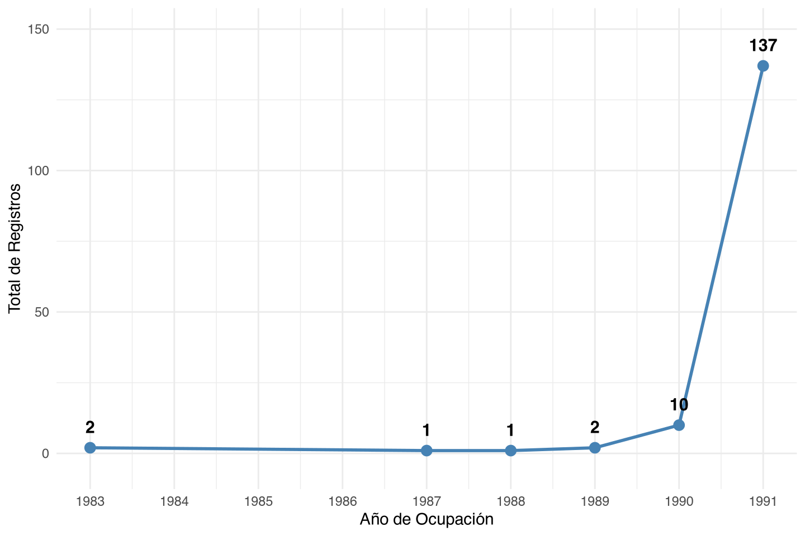
- El relato fundacional: 1989. Fuentes de prensa (Parra 2026) y documentos del Concejo (Concejo de Bogotá 2017).
- Rasters IGAC de 1990 y 1991: área aparece prácticamente vacía con rastros de loteo.
- Catastro: registros escasos de ocupación.
- Hipótesis preliminar: primera fase de preparación del lote y ventas, ocupación dispersa no capturada.
- Contexto del asentamiento: el eje económico fundamental es Corabastos (Parra 2026).
Período 2 — Ocupación masiva (1992–1994)
[pendiente de redacción]
En el segundo periodo queda en evidencia un proceso de ocupación masiva
- Raster IGAC de febrero de 1992: salto masivo de construcción.
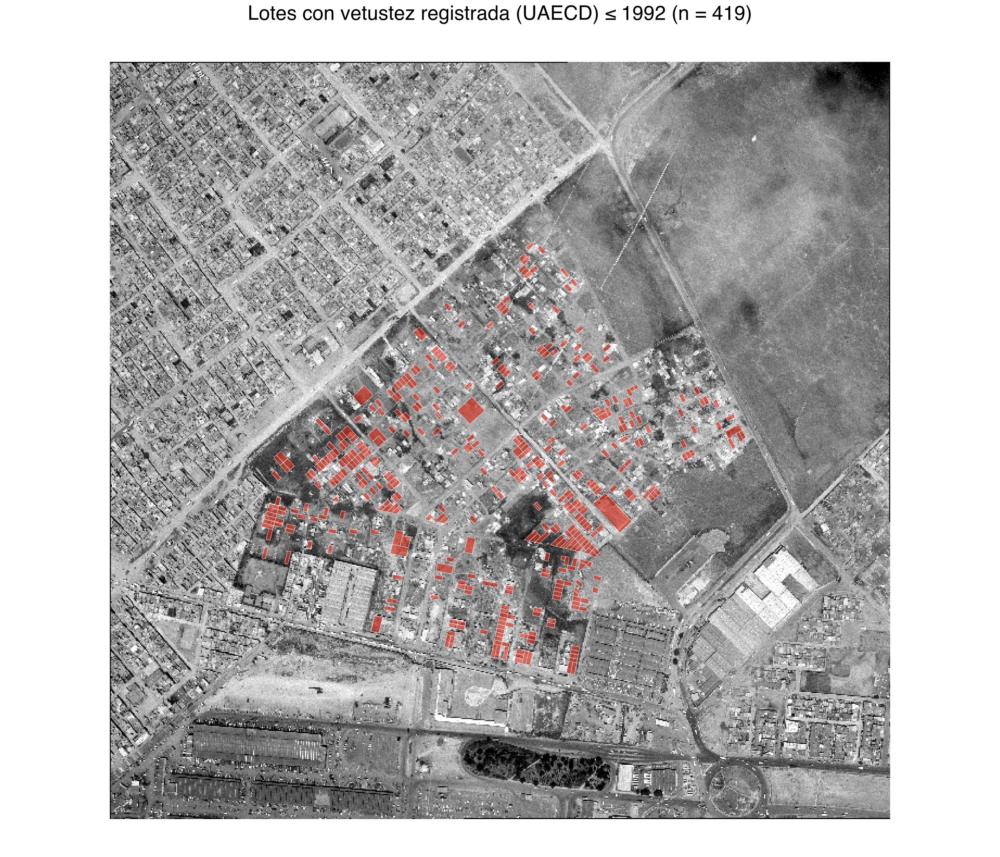
- Carta rural predial de 1994: construcciones delimitadas con convenciones catastrales.
- Vetustez del catastro (vista desde 2026): pico en 1993 (466 registros) y 1994 (171).
- Hallazgo: desfase de 1 a 2 años entre construcción física (1992) y reconocimiento catastral (1994).
- Interpretación: el rezago administrativo es medible y georreferenciable.
- Población: desplazamiento forzado y ocupación informal (Unidad para las Víctimas 2025).
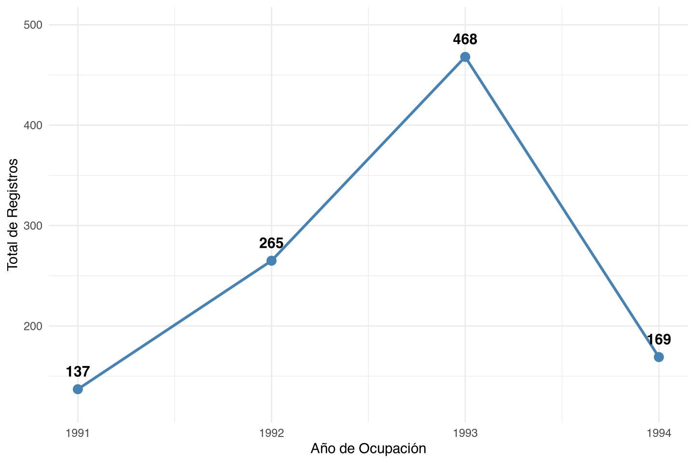
Período 3 — Consolidación y legalización (1994–1998)
[pendiente de redacción]
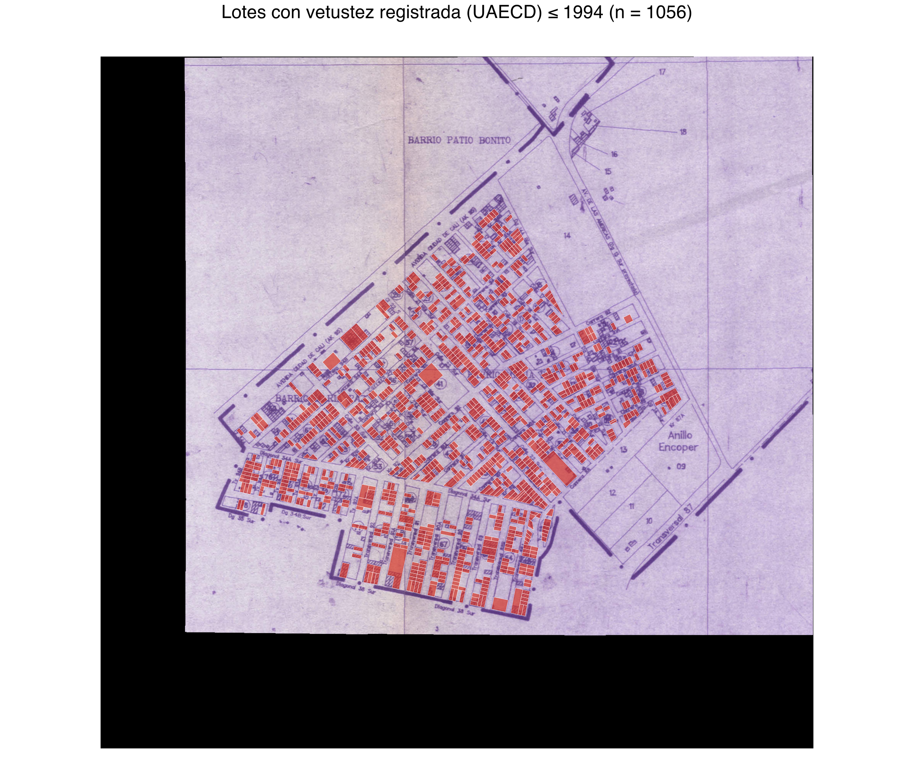
- Raster IDECA de 1998: el área del barrio aparece completamente construida.
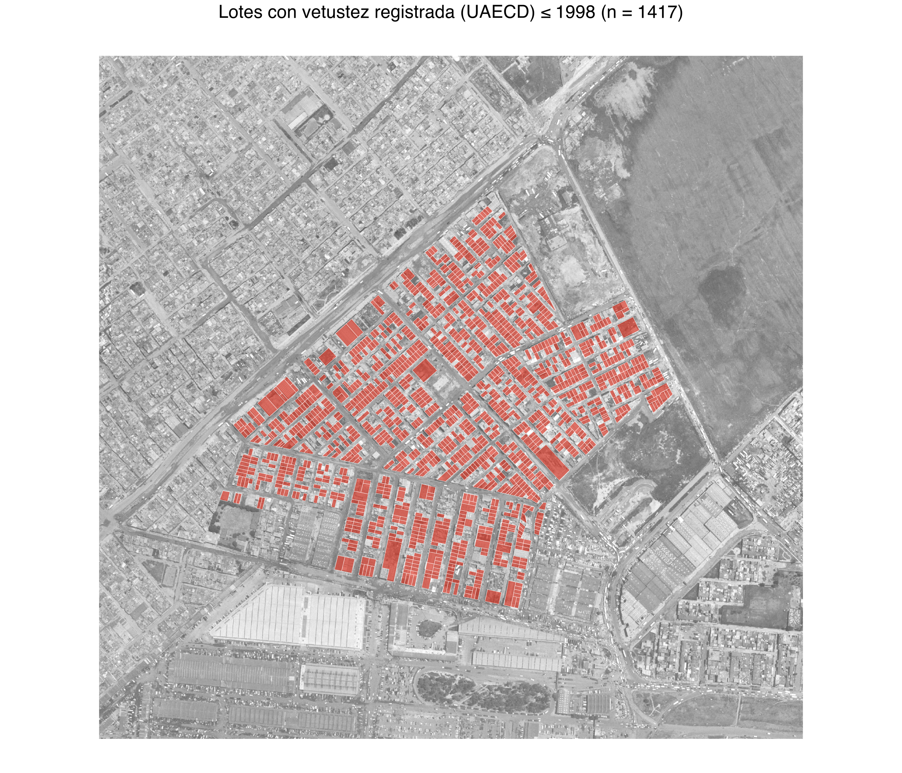
- Resolución 369 de 1998 del DAPD (SDP 1998): legalización urbanística del barrio.
- Secuencia: ocupación → construcción → legalización.
- La norma reconoce el tejido existente, lo formaliza e inicia el proceso de integración legal.
- La producción del espacio es previa al ordenamiento.
- Marco normativo posterior: Decreto 263 de 2010, reglamentación de la UPZ 80 Corabastos (Alcaldía Mayor de Bogotá 2010).
- Documentación sobre legalización de barrios en Bogotá (Secretaría Distrital de Planeación, n.d.).
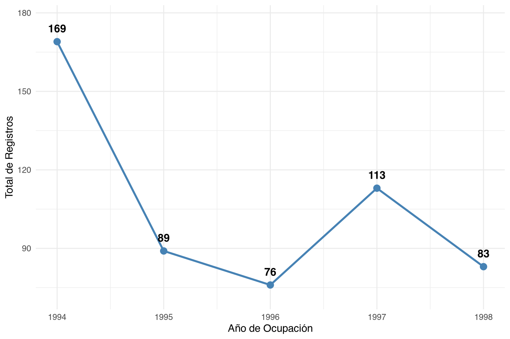
Período 4 — Post-legalización y titulación (1998–2018)
[pendiente de redacción]
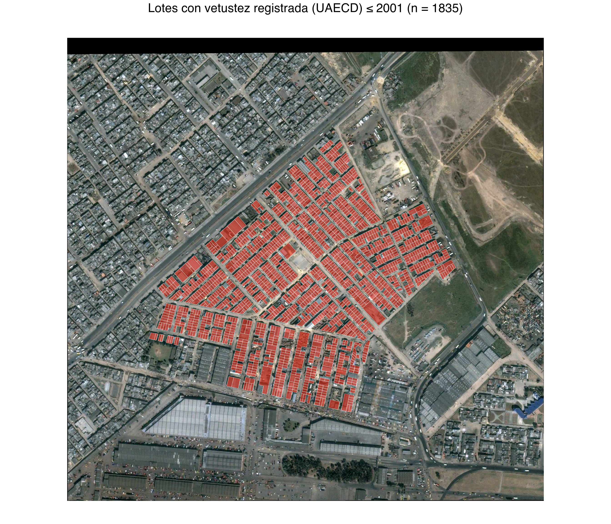
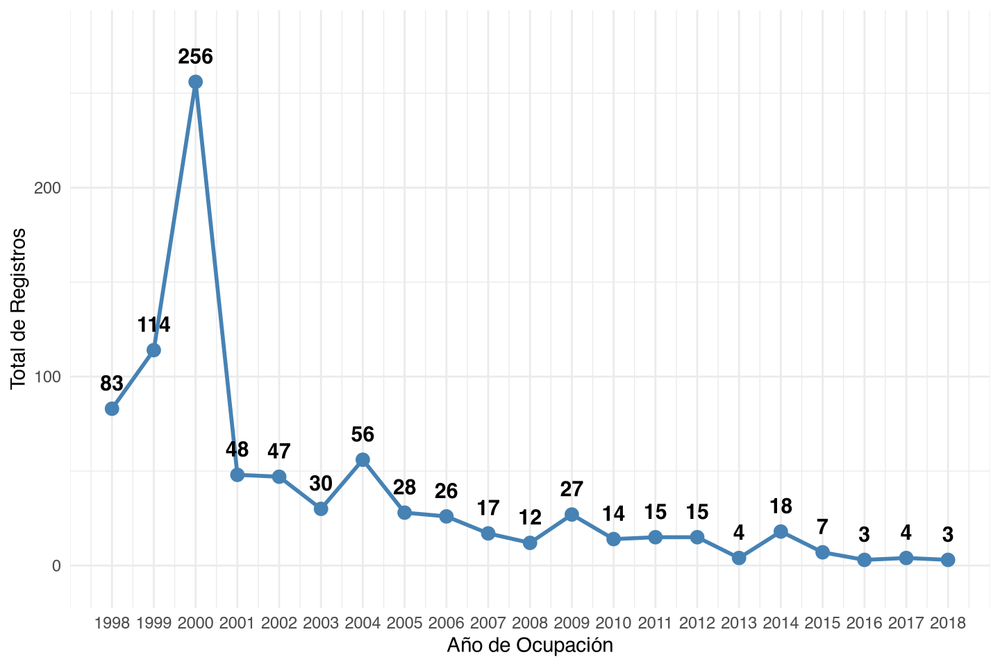
- Disminuyen lotes con destino económico
67(“mejoras ajenas”): suelo de un dueño, construcción de otro. - Titulación 2017–2018: 1.490 títulos entregados (Alcaldía Mayor de Bogotá 2018; El Tiempo 2017). CVP cuantifica y espacializa legalizaciones durante 2018-2019
- Hallazgo: la legalización urbanística (1998) no resolvió la propiedad del suelo.
- Veinte años entre formalización urbanística y formalización predial.
- Conflicto por espacio público: Acción Popular 2009-00257 (Juzgado Cuarto Administrativo de Descongestión del Circuito de Bogotá 2011).
- Datos prediales y morfológicos del barrio (y sociales incipientes): estudio de prefactibilidad IDU (Instituto de Desarrollo Urbano 2018).
- Antecedente académico: transformaciones del uso del suelo en María Paz (Parra Caro 2020).
[1] 73Período 5 — Resolución lenta del conflicto (2019–2026)
[pendiente de redacción]
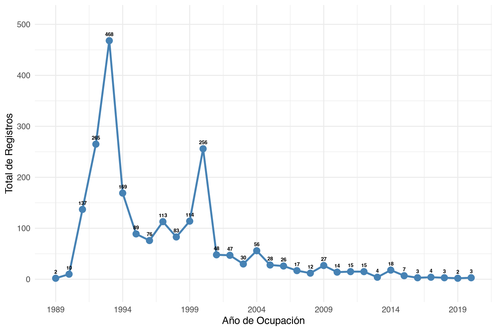
- Serie anual de lotes con mejoras ajenas
- Caída del indicador en siete años: algunos lotes resuelven el conflicto de propiedad, se mantiene un ritmo pequeño pero sostenido de titulación.
- Transiciones: 40 a residencial, 35 a comercio corredor, 35 a comercio puntual. 407 siguen marcados.
- Capa de titulación predial: Caja de la Vivienda Popular (CVP 2026).
- Datos catastrales abiertos: UAECD (Unidad Administrativa Especial de Catastro Distrital, n.d.).
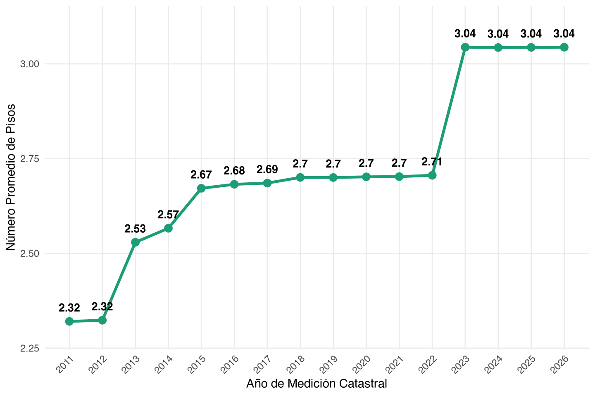
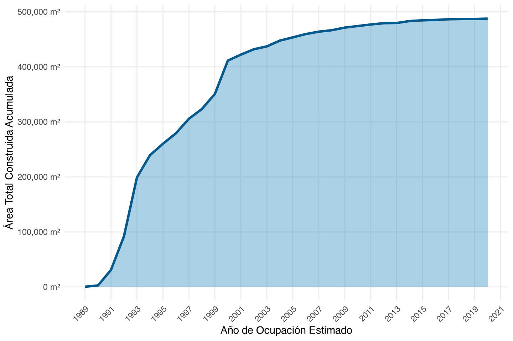
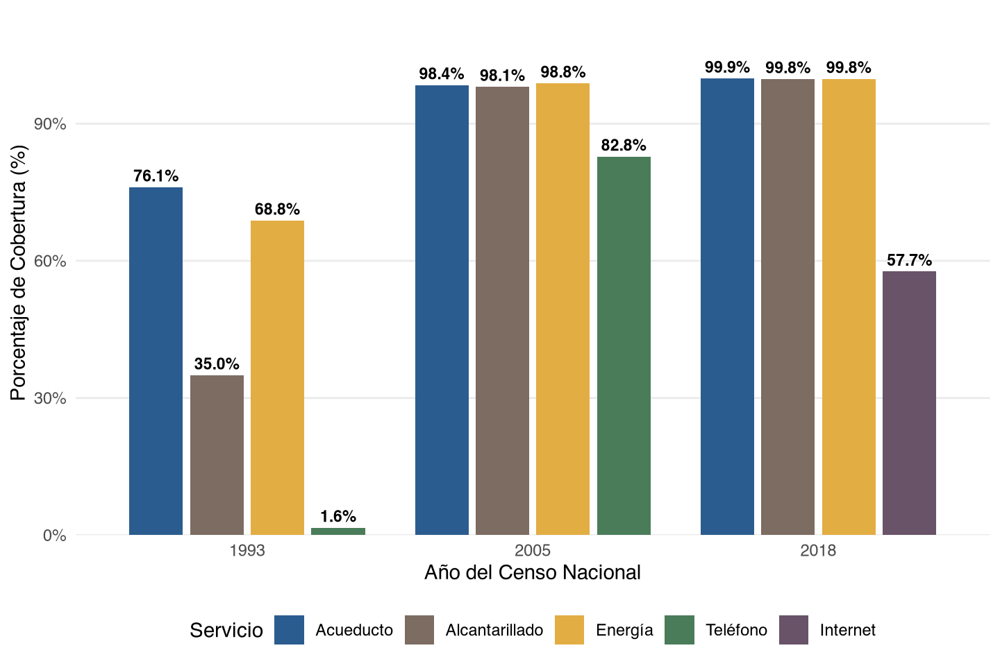
Discusión de resultados
[pendiente de redacción]
Prueba de conceptos técnicos (anexos)
Mapa interactivo para verificar vetustez con aerofotografía.
Cómo usar
- Ortofotos por año (arriba dererecha): cambia la areofotografía de fondo (barrio).
- Desde / Hasta (control deslizante): filtra lotes por vetustez en un rango personalizado que empieza desde los lotes con edad menor o igual a 1989 hasta la ultima fecha registrada.
- Clic sobre un lote: muestra su año estimado (UAECD).
- Checkbox Capa de datos (lotes): oculta/muestra los polígonos.
- Botones de zoom, centrado y pantalla completa: arriba izquierda.
Desde:
≤1989
Hasta:
2020
Tareas pendientes
- Medir área construida en los rasters de 1990, 1991, 1992 y 1998 (opcional).
- Cruzar la capa de titulación predial de la CVP.
- Realizar revisión documental detallada.
- Realizar análisis final
Referencias
Alcaldía Mayor de Bogotá. 2010. Decreto 263 de 2010: Reglamentación de La UPZ 80 Corabastos. https://www.alcaldiabogota.gov.co/sisjur/normas/Norma1.jsp?i=39990.
Alcaldía Mayor de Bogotá. 2018. Tras Espera de 25 Años, Más de 1.500 Familias Reciben Títulos de Propiedad En María Paz. https://bogota.gov.co/en/node/17896.
Arriadaga. 2011. Evaluación de La Experiencia Censal Reciente Sobre Vivienda y Hogar. https://repositorio.cepal.org/server/api/core/bitstreams/72147b1e-29e4-4691-9b83-268a5abb3219/content.
Concejo de Bogotá. 2017. María Paz, Una Esperanza de Vida. https://concejodebogota.gov.co/maria-paz-una-esperanza-de-vida/cbogota/2017-12-22/114106.php.
CVP. 2026. Capa de Titulación Predial,. https://www.ideca.gov.co/recursos/mapas/titulacion-predial-bogota-dc.
DANE. 2008. Censo General 2005. https://www.dane.gov.co/files/censos/libroCenso2005nacional_anterior.pdf.
DANE. 2009. Memoria Técnica Del Censo de 1993. https://microdatos.dane.gov.co/index.php/catalog/113/download/24012.
DANE. 2018. CNPV 2018, Documento Metodológico. https://systema59.dane.gov.co/redcol/CNPV2018/Metodologia_CNPV_2018.pdf.
DANE. 2019. Informe de La Comisión de Expertos Para La Evaluación Del CNPV 2018. https://www.dane.gov.co/files/censo2018/informacion-tecnica/CNPV-2018-informe-comite-expertos-nacional.pdf.
DANE. 2022. Metodologías Demográficas Aplicadas. N°2. https://www.dane.gov.co/files/investigaciones/boletines/Info-meto-aplic/03082022-Metodologia_Estimacion_Omision_Censal.pdf.
DANE. n.d. Departamento Administrativo Nacional de Estadística. https://microdatos.dane.gov.co/index.php/catalog/central/about.
Datos Abiertos Bogotá. n.d. Plataforma de Datos Abiertos, Alcaldía de Bogotá. https://datosabiertos.bogota.gov.co/about.
DNP. 1996. Documento CONPES 2866 - DNP:UDS-DANE. https://colaboracion.dnp.gov.co/CDT/CONPES/Econ%C3%B3micos/2866.pdf.
El Tiempo. 2017. 1.200 Familias de María Paz, Kennedy, Recibirán Títulos de Propiedad. https://www.eltiempo.com/page/bogota/distrito-compra-predios-de-maria-paz-en-kennedy-164260.html.
IDECA. n.d. Infraestructura de Datos Espaciales de Bogotá. https://www.ideca.gov.co/sobre-ideca/la-ide-de-bogota.
IDU. n.d. Instituto de Desarrollo Urbano, Repositorio Institucional. webidu.idu.gov.co/jspui/.
IGAC. n.d. Instituto Geográfico Agustín Codazzi. https://www.igac.gov.co/quienes-somos.
Instituto de Desarrollo Urbano. 2018. Estudio de Prefactibilidad de Los Proyectos En El Sector de Corabastos y El Barrio María Paz. IDU. https://webidu.idu.gov.co/jspui/items/c660a83f-761e-4334-b526-b56edff3493e.
Juzgado Cuarto Administrativo de Descongestión del Circuito de Bogotá. 2011. Acción Popular 2009-00257, Sentencia Del 6 de Octubre de 2011. https://cms1.participacionbogota.gov.co/sites/idpac/files/notificaciones/2023-12/autodearchivo-ocdi058-2023.pdf.
Parra Caro, Karen Dayanna, Daniela Indira y Hernández Yunda. 2020. “De Ciudades y Resistencias: Transformaciones Del Uso Del Suelo En El Barrio María Paz.” Universidad Distrital Francisco José de Caldas. http://repository.udistrital.edu.co/items/ece01bab-5562-4370-ad08-5e5518c18dbe.
Parra, Juan Camilo. 2026. “María Paz: La Mutación de Un Barrio Que Acogió Desplazados y Nació a La Sombra de Corabastos.” El Espectador. https://www.elespectador.com/bogota/maria-paz-la-mutacion-de-un-barrio-que-acogio-desplazados-y-nacio-a-la-sombra-de-corabastos/.
Ryten et al. 2007. Informe de Recomendaciones, Comisión de Evaluación Censo General 2005. https://www.dane.gov.co/files/comunicados/cp_informfinal08.pdf.
SDP. 1998. Resolución 369 de 1998. https://www.sdp.gov.co.
Secretaría Distrital de Planeación. n.d. Legalización de Barrios. https://www.sdp.gov.co.
UAECD. n.d. Unidad Administrativa Especial de Catastro Distrital. https://www.catastrobogota.gov.co/sobre-catastro/quienes-somos.
Unidad Administrativa Especial de Catastro Distrital. n.d. Datos Abiertos Geoespaciales. https://datosabiertos.bogota.gov.co/organization/uaecd.
Unidad para las Víctimas. 2025. Registro Único de Víctimas. Datos Por UPZ. https://www.unidadvictimas.gov.co.
Footnotes
Esta infraestructura es coordinada por la UAECD y en ella se estandarizan y distribuyen datos oficiales de las entidades del distrito para la planeación de la ciudad. Se encuentra regulada por el Acuerdo Distrital 130 de 2004 del concejo de Bogotá.↩︎
Se requiere un esfuerzo adicional para crear un diccionario de datos de las versiones antiguas del MR, que no se encuentran debidamente documentadas. Esto se realizará durante el transcurso de la investigacion.↩︎
En este punto hace falta una investigación más profunda sobre la metodología de la UAECD para definir la edad de un predio-construcción; la documentación existente no revela mayores detalles al respecto.↩︎
i.e. de derecho. ” según el cual las personas se empadronan en el lugar de su residencia habitual.” (DANE)↩︎
Como propuesta para el trabajo de grado, se planea usar datos demográficos detallados con arreglo caracterizar a la población del barrio María Paz usando los tres cortes censales disponibles.↩︎
Se aclara que es necesario un proceso adicional para implementar otras fuentes disponibles en función de medir la cobertura de servicios públicos de manera detallada, asimismo, se requiere un nuevo proceso de recolección de datos orientado a hallar fuentes de alta calidad para cubrir esta dimensión con suficiencia.↩︎
Ver hoja de cálculo anexa con la lista completa de variables.↩︎
En un sentido morfológico (CITA)↩︎